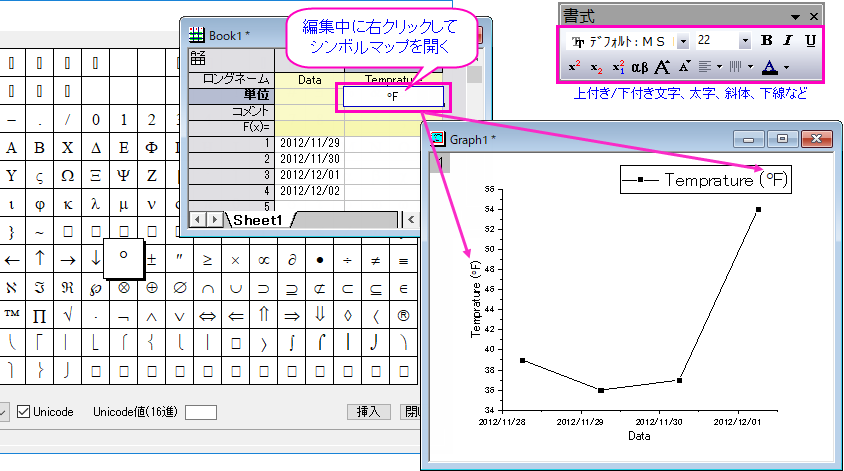
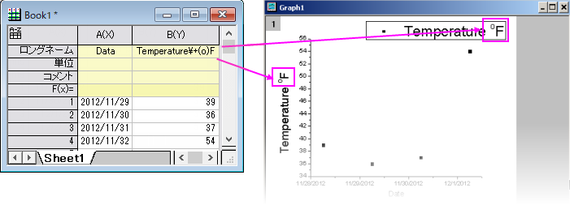
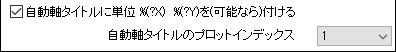

FAQ-149 ワークシートヘッダに入力したギリシャ文字や上付き文字を、グラフの凡例や軸タイトルに表示するにはどのようにしたらよいのでしょうか？
Insert-Symbols-in-Legend
最終更新日：2022/9/23
グラフタイトルと凡例は、ワークシート列ラベル行にあるプログラム的にリンクされたデータから作成された特別なテキストラベルです。したがって、軸のタイトルまたは凡例に特殊文字を追加する場合はとくに、直接凡例やタイトルを編集して追加するよりも、ラベル行で文字を追加するのが最も簡単です。
- 
関連のFAQ: テキストラベルに特殊文字を挿入する方法
リッチテキスト
上付き文字や下付き文字を含む複雑な書式をワークシートのセルテキストに追加するには、リッチテキストを有効にする必要があります。デフォルトでは、単位とユーザ定義パラメータ行でのみリッチテキストが有効になっています。
- ワークシートの行またはセルを右クリックし、ショートカットメニューの下部から<オブジェクト>の書式を設定: リッチ テキストを選択します。
- また、ワークシート上のなにもない灰色の部分で右クリックして、ワークシートの表示属性を選択します。フォーマットタブを開き、適用先を設定してリッチテキストにチェックを付けてOKをクリックします。
Origin 2018以降の特殊文字
Origin 2018より前のバージョンでは、列ラベルの行セルに特殊文字を入力する場合、リッチテキストを有効にする必要がありました。現在では、OriginワークシートでUnicodeがサポートされたため、必要なくなりました。
- ワークシートセルをダブルクリックして編集モードにします。
- 16進数の4文字の文字コードを入力し(例: "λ"は03BB)、ALT+Xキーを押します。コードポイントが挿入されます。
- または、右クリックしてシンボルマップ(CTRL+M) を選択し、文字を選択して挿入をクリックします(簡易版シンボル マップと詳細なシンボルマップについては、このトピックを参照してください)。
Note:
- 4文字の文字コードを入力してからALT+Xキーを使用してUnicode 文字を入力するとき、その時に選択されたフォントが文字に含まれていないとき、フォントを切り替える必要があります。どのフォントがどの文字をサポートしているかは、この外部Webサイトを参照してください。
- プロジェクトを古い (バージョン2018より前の) opj形式で保存する場合は、リッチ テキストを有効にし、 シンボルマップダイアログを使用して特殊文字を挿入する必要があります。手順については、次のセクションを参照してください。
Origin 2017以前の特殊文字
Origin 2018 より前のバージョンのOriginはUnicodeをサポートしていません。ワークシートに特殊文字を入力するには、まずリッチ テキストを有効にする必要があります。上記のリッチ テキストの項目を参照してください。
バージョン9.0から2017:
Origin 9.0以降では、ヘッダ行（列ラベル行）およびワークシート部分のリッチテキストをサポートしています。シンボルマップで特殊文字を入力する、あるいは、書式ツールバーボタン（ギリシャ文字、上付きまたは下付きなど）で編集する前にリッチテキストを有効にします。
9.0よりも前のバージョン:
古いバージョンでは、エスケープシーケンスを使用したワークシート列ラベルの編集が可能です。
ここでの欠点は、いくつかの書式設定オプション（例えば、上付き文字や下付き文字）がワークシート上で正常に表示されないことです（\+(o)はグラフ凡例では上付き文字として変換されますがワークシート上ではエスケープシーケンスがそのまま表示されます）。
- 
凡例や軸タイトルでワークシートヘッダ行を使用するためのグラフ設定
凡例テキストの編集: グラフウィンドウをダブルクリックして作図の詳細を開きます。左パネルで、グラフレベルを選択し、凡例/タイトルタブを開いて、%(1),%(2)の解釈モードを設定してヘッダテキストを使用します。利用可能なオプションに希望のものがない場合(@U: ロングネーム & 単位もあります)、カスタムを選択します。凡例テキストの編集を参照してください。
軸タイトルの編集: 凡例/タイトルタブには、ワークシート情報を使用して軸タイトルを構築するために便利な2つの設定があります。軸タイトルの編集についての詳細は、軸ダイアログボックス タイトルテキストを参照してください。
- 
グラフ凡例と軸タイトルの編集内容は、ファイル: テンプレートとして保存を選択してグラフテンプレートに保存できます。詳細情報は、 Originのテンプレートファイルをご覧下さい。
 | 軸タイトルおよび凡例オブジェクトでテキストを直接編集するには、オブジェクト上でダブルクリックします。これによりインプレース編集モードになり、ワークシートメタデータへのタイトルや凡例のリンクである非表示のLabTalk変数を上書きできますこれは、テンプレートの保存には適していない「素早く直接的な」方法ですが、静的テキストでも問題ない場合は機能します。この方法でテキストラベルに特殊文字を入力する場合は、FAQ-148 どのようにグラフラベルにギリシャ文字や特殊記号を入力したら良いでしょうか? を参照してください。
|
キーワード: Unicode, ALT+X, オングストローム, 度, 数学, ウムラウト, 音節, アクセント記号, チルダ, アクセントマーク, マクロン, 曲アクセント, プランク定数, プランク, π, 上付き文字, 下付き文字, ワークシートヘッダ